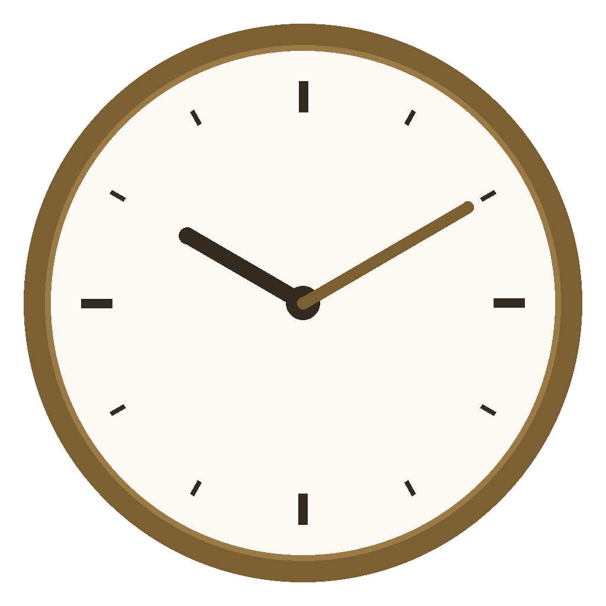

휴식 시간에 키보드를 강제로 잠가서 진짜로 쉬게 만드는 Windows용 뽀모도로 타이머. 알림만 띄우고 끝나는 타이머는 결국 무시하게 됩니다.
A retro-styled focus timer for Windows that locks your keyboard during breaks so you actually rest, not just a countdown you learn to ignore.
원하는 작업·휴식 길이를 설정하면 빈티지 시계 UI가 방해 없이 자동으로 반복합니다.
Set your own focus and break lengths and let Vintage Pomodoro repeat them automatically, with a vintage clock-face UI that stays out of your way.
강제 잠금을 켜면 휴식 시간 동안 키보드 입력이 막힙니다 — 정해둔 휴식을 몰래 건너뛸 수 없습니다.
Turn on strict lock and the app keeps you off the keyboard for the length of the break — no quietly skipping the rest you scheduled.
같은 Wi-Fi에 있는 개인 Mac 앱과 타이머 상태를 실시간으로 동기화합니다. 인터넷을 거치지 않습니다.
Syncs timer state in real time with the Mac app over your local Wi-Fi — no internet round-trip.
오늘, 그리고 그동안 실제로 완료한 집중 세션을 보여줍니다. 전부 기기에만 저장됩니다.
See how many focus sessions you actually completed today and over time, stored locally on your device.
회원가입도, 서버도 없습니다. 설정과 기록은 내 PC에만 남습니다.
No sign-up, no server. Your settings and session history stay on your own PC.